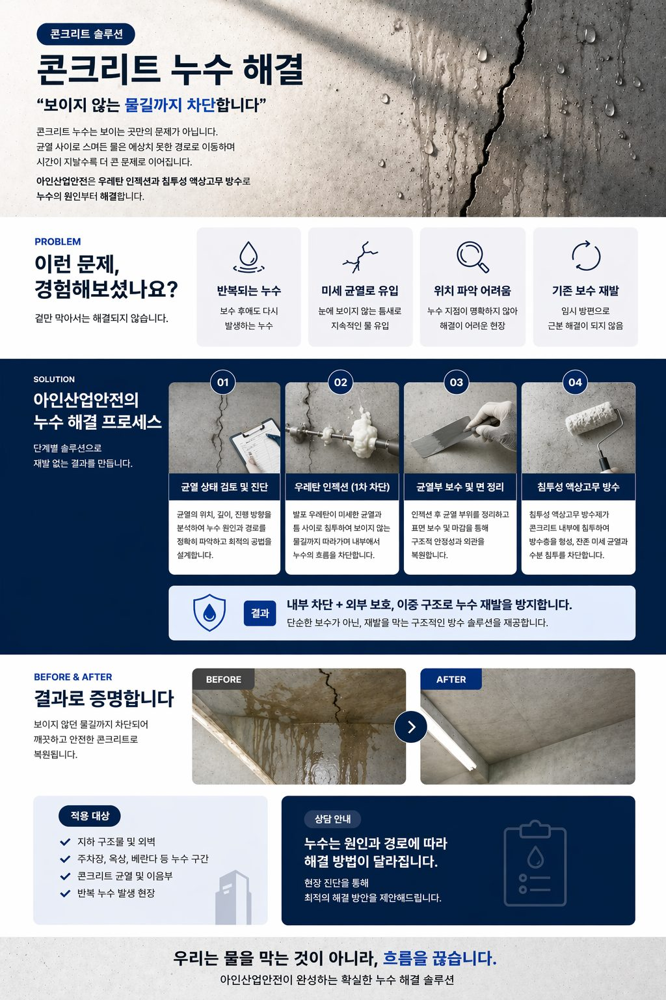
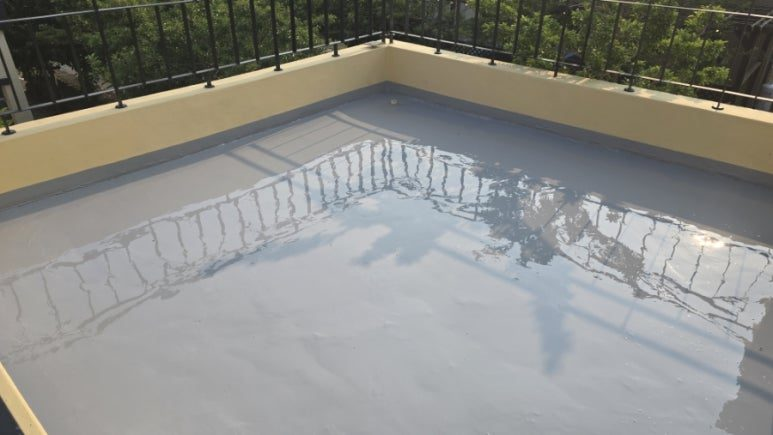
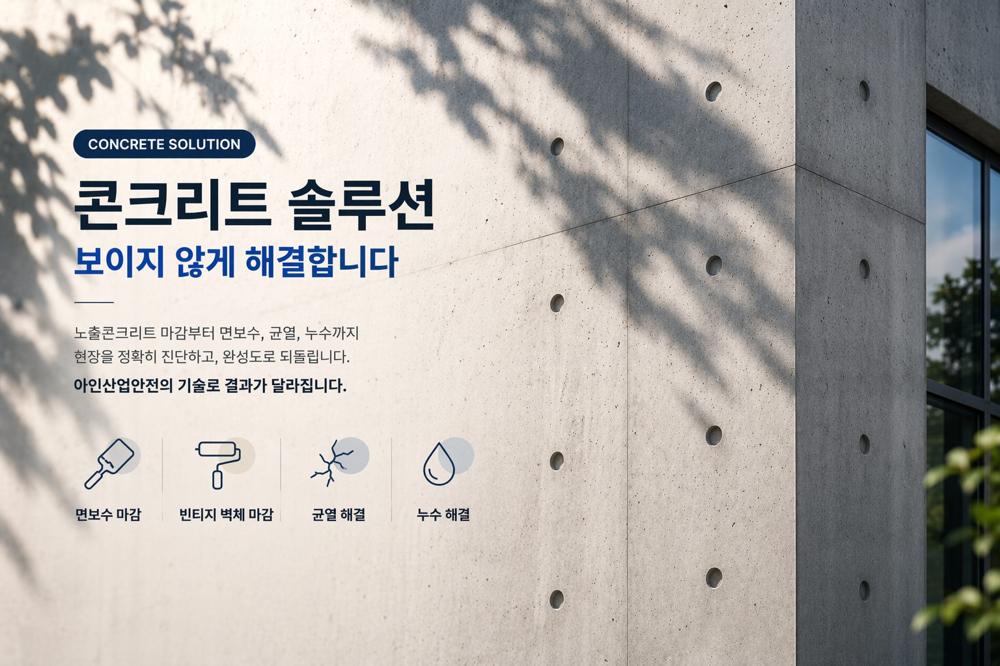

01
균열 · 조인트 인젝션
CRACK INJECTION
패커를 설치하고 균열 내부에 재료를 주입해 물길을 막습니다. 물이 흐르는 활수 상태는 발포형 우레탄으로 1차 차수한 뒤, 미세 누수는 저점도 재료로 마무리합니다.

INJECTION & WATERPROOFING
물이 새는 자리와 들어온 자리는 다릅니다. 경로를 찾는 일에서 시작합니다.
주입 위치를 정하는 데 시간을 씁니다. 주입 자체는 그다음입니다.
지하주차장·지하벽·옹벽 같은 콘크리트 구조체 누수 보수에서 가장 많이 실패하는 이유는 물이 떨어지는 지점만 보고 주입하기 때문입니다. 슬래브 조인트, 관통 슬리브, 벽체 균열 등 유입 지점을 먼저 확인해야 재발을 줄일 수 있습니다. 제주도는 강우가 집중되는 시기가 뚜렷해, 우레탄 인젝션 이후 강우기 재확인까지 포함해 계획합니다.
FREQUENT QUESTIONS
METHOD
누수 상태(활수 여부), 부위 형상, 마감 조건에 따라 공법을 나눕니다.

01
CRACK INJECTION
패커를 설치하고 균열 내부에 재료를 주입해 물길을 막습니다. 물이 흐르는 활수 상태는 발포형 우레탄으로 1차 차수한 뒤, 미세 누수는 저점도 재료로 마무리합니다.
02
BACK GROUTING
구조체 뒤쪽에 공극이 있는 경우 표면 주입만으로는 물길이 남습니다. 배면을 채워 유입 경로 자체를 줄입니다. 지하층·물탱크실 등에 적용합니다.
03
LIQUID RUBBER
이음매가 생기지 않아 드레인 주변, 파이프 관통부, 파라펫 코너처럼 형상이 복잡한 부위에 유리합니다. 함수율과 표면 강도를 확인한 뒤 시공하며, 보행부는 상부 보호층을 함께 계획합니다.

04
SURFACE RESTORATION
방수가 끝나도 주입 자국과 패커 흔적이 남으면 민원은 계속됩니다. 노출콘크리트 면보수 기술을 그대로 적용해 원래의 질감으로 정리합니다.
CHECK POINT
CASE 01
슬래브 균열과 시공 조인트를 따라 물이 떨어지고 백태가 생기는 현장.
CASE 02
벽면에 물자국이 번지고 도장이 들뜨는 현장. 옹벽 등 구조체 배면 지수를 함께 검토합니다.
CASE 03
기존 방수층 노후, 드레인 주변 균열로 아래층에 누수가 나타나는 현장.
CASE 04
상시 수압이 걸리는 구간으로, 재료 선정과 시공 순서가 특히 중요한 현장.
TECHNICAL NOTES
누수 경로 추적과 재료 선택의 판단 기준을 공정별로 정리했습니다.
SURFACE RESTORATION
방수 뒤 남은 주입 자국과 패커 흔적을 정리하는 마감 복원은 노출콘크리트 면보수와 같은 기술입니다. 그 결과를 시공 전후 사진으로 확인하실 수 있습니다.
 BEFORE / AFTER송파 오픈예정 식당 인더스트리얼 콘채 빈티지 벽체 시공송파 지역 식당 오픈 준비 현장에서 이질재료 벽체를 올퍼티·다단계 콘채뿜칠로 인더스트리얼 빈티지 벽체로 완성한 사례. 자재·공구 목록과 9단계 공정을 상세 기록.
BEFORE / AFTER송파 오픈예정 식당 인더스트리얼 콘채 빈티지 벽체 시공송파 지역 식당 오픈 준비 현장에서 이질재료 벽체를 올퍼티·다단계 콘채뿜칠로 인더스트리얼 빈티지 벽체로 완성한 사례. 자재·공구 목록과 9단계 공정을 상세 기록. BEFORE / AFTER제주 오염·백화 노출콘크리트 면보수 (콘채 라이트그레이2:아이보리1)제주 지역 기후로 오염과 백화가 누적된 노출콘크리트 면을 콘채(라이트그레이2:아이보리1 배합)로 복원한 면보수 사례. 시공 영상 포함.
BEFORE / AFTER제주 오염·백화 노출콘크리트 면보수 (콘채 라이트그레이2:아이보리1)제주 지역 기후로 오염과 백화가 누적된 노출콘크리트 면을 콘채(라이트그레이2:아이보리1 배합)로 복원한 면보수 사례. 시공 영상 포함. 제주 주택 웜그레이톤 콘채 노출콘크리트 마감 (아이보리·라이트그레이 1:1 배합)제주 주택 현장에서 콘채 아이보리와 라이트그레이를 1:1 비율로 배합해 부드럽고 고급스러운 웜그레이톤 노출콘크리트를 구현한 사례.
제주 주택 웜그레이톤 콘채 노출콘크리트 마감 (아이보리·라이트그레이 1:1 배합)제주 주택 현장에서 콘채 아이보리와 라이트그레이를 1:1 비율로 배합해 부드럽고 고급스러운 웜그레이톤 노출콘크리트를 구현한 사례.